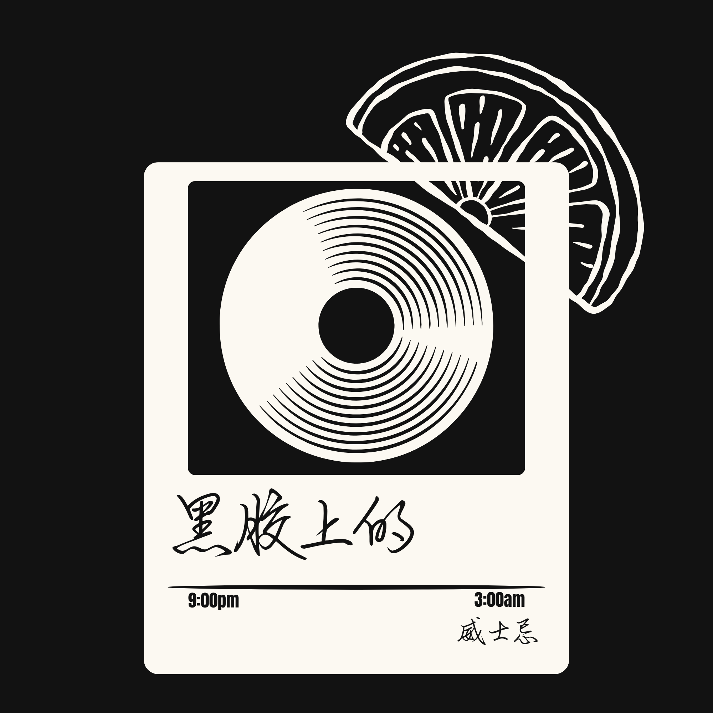

v2.1.1 · ABANDONED
调酒长匙
Bar spoon
太工具, 太硬, 不属于这个房间。 Too tool, too hard. Doesn't belong in this room.

EXHIBIT 01 — THE INVITATION
A room, not a bar.
这不是一份产品介绍 — 是一封写给愿意慢下来的人的信。 This isn't a product page — it's a letter to anyone willing to slow down.
城市需要一个不催促的房间: 没有翻台 · 没有推销 · 没有需要被介绍的自己。 The city needs a room that doesn't rush you: no table turnover · no upselling · no "self" to be introduced.
下面这些, 是这间屋子从概念到成形, 留下的几张草稿、几次失败的实验、几版 AI 渲染, 和我自己的笔记。 What follows are the drafts, failed experiments, AI renders and notes left behind as this room moved from concept toward form.


NOTES · v1 → v2
一张 12 寸黑胶 A 面的长度, 约 22 分钟。这个数字成了整间屋子的设计单位 — 灯光渐暗的周期、推荐切下一张唱片的间隔、客人安静坐着不被打扰的最小窗口。 One side of a 12-inch vinyl runs about 22 minutes. That number became the design unit of the entire room — the dimming cycle, the interval between suggesting the next record, the minimum window of being-left-alone.
它不是修辞, 是工程参数。 Not a metaphor — an engineering parameter.
The first draft sold drinks.
This one sells permission.
左边那份计划书是 v1.0 — 标准独立酒吧 landing page 的思路: 主视觉、菜单、地址、预约表单。我做完后看一遍, 关掉, 一周没再打开。 The plan on the left is v1.0 — the standard indie-bar landing-page playbook: hero visual, menu, address, reservation form. I finished it, looked at it once, closed it, didn't reopen it for a week.
问题不是它不够好看 — 是它在解释 "我们卖什么", 完全没有回答 "为什么应该来"。 The problem wasn't that it looked bad — it explained what we sell without ever answering why you should come.
v2 之后, 整个项目的方向转向 attitude 的设计: 不卖 inventory, 卖一种允许。 After v2, the project pivoted toward designing an attitude — not selling inventory, but selling a kind of permission.
EXHIBIT 02 — V2 · 一根针走了三版 EXHIBIT 02 — V2 · ONE HAND, THREE DRAFTS
v2.1 给首屏的黑胶加上了真实时间的指针 — 转盘是装饰, 时针分针绑到浏览器时钟。一开始时针是普通调酒长匙, 后来发现它在视觉上"太硬"了 — 像工具, 不像氛围。 v2.1 gave the hero vinyl real clock hands — the platter is decorative, but the hour and minute hands are bound to the browser clock. The hour hand started as a long bar spoon — visually "too hard," more like a tool than an atmosphere.
替换成苦艾酒匙 (一种带镂空叶片的吧台用具) 之后, 时针有了仪式感; 分针换成水果鸡尾酒签 + 黑橄榄, 整套钟终于"住进"了酒吧。 Swapping it for an absinthe spoon (a slotted-leaf bar tool) gave the hour hand a sense of ritual; the minute hand became a cocktail pick + black olive. The whole clock finally "moved in" to the bar.
这一段没有什么大故事 — 但它是整个 v2 网站里我最满意的一个细节。一根针走了三版, 才像。 No big story here — but it's the detail in the whole v2 site I'm proudest of. One hand took three drafts before it felt right.
太工具, 太硬, 不属于这个房间。 Too tool, too hard. Doesn't belong in this room.
叶片镂空 + 短柄, 有仪式感而非工具感。 Slotted leaf + short shaft — ritual, not utility.
木签穿过深紫橄榄 — 整套钟终于像酒吧。 Wood pick through a deep-purple olive — finally a bar's clock.
EXHIBIT 03 — V3 · 平面布局 EXHIBIT 03 — V3 · FLOOR PLAN
v3 阶段开始想做空间。在没有实体场地之前, 我需要先在脑子里把这间屋子走一遍 — 入口缓冲、酒柜+音乐总控、主厅、VIP、调酒区、卫生间。 v3 turned to space. Before any physical site existed, I needed to walk through the room in my head — entrance buffer, cellar + music control, main hall, VIP, bar, restrooms.
所有的尺度、光照色温、声学吸音参数 (RT60 ≈ 0.4-0.6s), 都先在这张图上对齐。 All scale, color-temperature schedule and acoustic absorption (RT60 ≈ 0.4–0.6s) get aligned on this one drawing first.
代号 "落日飛車 · Sunset Car" — 在建筑图层面用的项目名。"黑胶上的威士忌" 是对外的品牌名。 Codename "Sunset Car · 落日飛車" — the project name used on the architectural layer. "Whiskey on Vinyl" is the outward-facing brand.

AI 俯视 v1 · 包含 6 个分区 + 灯光色温时间表 + 音响三角图 AI top-down v1 · 6 zones + color-temperature schedule + speaker triangle
点击任意一张 · 查看完整成品图 Click any one for the full image
EXHIBIT 05 — V3.4 · 20 间想象的房间 EXHIBIT 05 — V3.4 · 20 IMAGINED ROOMS
用 Hugging Face Pro 上的 FLUX.1-merged 生成了 20 张实景渲染 — 从入口缓冲、吧台细节、单人扶手椅、VIP 半弧形, 到顶棚黑胶仰望、深夜 1800K 的酒墙特写。 Twenty photoreal renders generated with FLUX.1-merged on Hugging Face Pro — from the entrance buffer and bar details to the single armchair, the VIP semicircle, the vinyl ceiling looking up, and the 1800K bottle-wall close-up.
最后三张 (18 / 19 / 20) 是同一空间在 9pm · 12am · 2am 的色温递进 — 整间屋子按时间会慢慢沉进夜里。 The last three (18 / 19 / 20) are the same space at 9pm · 12am · 2am — the whole room slowly settles into the night.
 01 · floor plan
01 · floor plan
 02 · hero wide
02 · hero wide
 03 · bar straight
03 · bar straight
 04 · bar side
04 · bar side
 05 · bar tools
05 · bar tools
 06 · hall dense
06 · hall dense
 07 · hall clusters
07 · hall clusters
 08 · armchair pair
08 · armchair pair
 09 · solo corner
09 · solo corner
 10 · vip semicircle
10 · vip semicircle
 11 · vip → bar
11 · vip → bar
 12 · cellar wall
12 · cellar wall
 13 · bottle wall
13 · bottle wall
 14 · ceiling ↑
14 · ceiling ↑
 15 · entrance
15 · entrance
 16 · corridor
16 · corridor
 17 · sweet spot
17 · sweet spot
 18 · 9pm · 2700K
18 · 9pm · 2700K
 19 · 12am · 2200K
19 · 12am · 2200K
 20 · 2am · 1800K
20 · 2am · 1800K
点击单张图查看大图 · 横向拖动浏览 20 张
EXHIBIT 06 — V3.5 · 可走进的房间 EXHIBIT 06 — V3.5 · A WALKABLE ROOM
v3.5 把所有 AI 实景图反过来喂给 Microsoft TRELLIS, multidiffusion 融合成一个完整的 GLB 场景。原始模型 137 MB, 浏览器加载到一半 Safari 就崩。用 gltf-transform 加 Draco 几何压缩之后 — 3.49 MB, 网页可以即时加载。 v3.5 fed all the AI scene images back into Microsoft TRELLIS, with multidiffusion fusing them into one complete GLB scene. Raw model: 137 MB — Safari crashed mid-load. After gltf-transform with Draco geometry compression — 3.49 MB, instant in-browser load.
下方是其中一个分镜 (02 · hero wide), 拖动旋转, 滚轮缩放。整间屋子之后会以这种交互方式逐个 section 拼起来。 Below is one shot (02 · hero wide) — drag to rotate, scroll to zoom. The entire room will eventually be reassembled section by section through this interaction.
02 · hero-wide · GLB / Draco compressed · 拖动旋转 · 滚轮缩放 02 · hero-wide · GLB / Draco compressed · drag to rotate · scroll to zoom
Three.js 自建场景 Three.js handbuilt scene → Spline 导出 GLB Spline GLB export → Hunyuan3D · 16 单件 Hunyuan3D · 16 single objects → TRELLIS · 6 张图融合 TRELLIS · 6-image fusion → gltf-transform · Draco
EXHIBIT 07 — V4 · 选择不做 EXHIBIT 07 — V4 · CHOOSING NOT TO
v3.5 之后, 我把 3D 模块封存了。原因是 — 这间屋子终究是要建出来的, 一旦实体空间存在, 用 iPhone LiDAR 扫一次就能得到 100% 真实的模型, 任何"想象的渲染"都会被替代。 After v3.5, I shelved the 3D module. The reason — this room will eventually be built, and once a physical space exists, a single iPhone LiDAR scan returns a 100% truthful model. Any "imagined render" gets overwritten.
继续在没有实体的阶段堆 AI 模型, 反而是在欺骗访客 "你看到的就是它的样子"。事实是: 还没有人看到。 Stacking more AI models without a real space lies to visitors — "this is what it looks like." Truth: no one has seen it yet.
v4.1 把这一切写成 《Whiskey on Vinyl · 完整重建指南》— 一份给未来任何一位接手者 (包括我自己) 可以从零重建整个网站的文档。代码、文案、决策、踩过的坑, 全部记下。 v4.1 wrote all of this into Whiskey on Vinyl · A Full Reconstruction Guide — a document any future caretaker (myself included) could use to rebuild the whole site from zero. Code, copy, decisions, mistakes, all logged.
The discipline isn't making more.
It's knowing when to stop.
— Step inside
走进主站 → Step into the room →